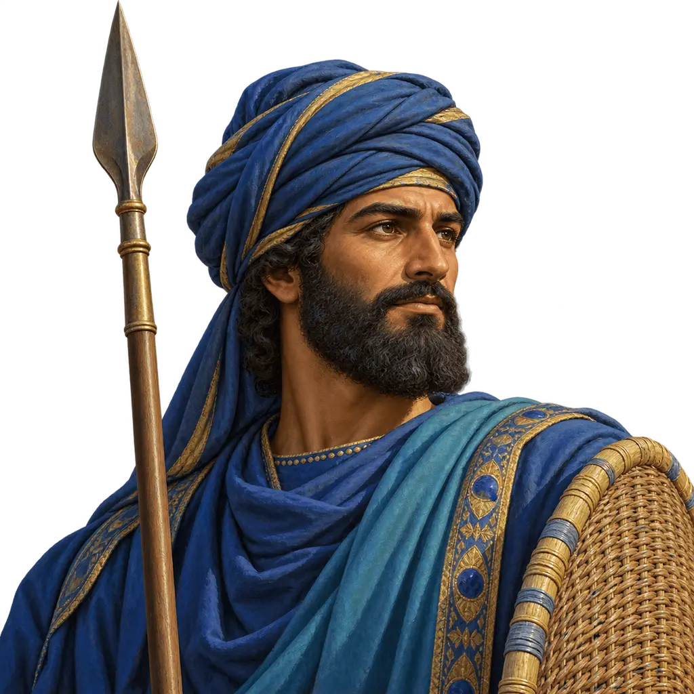
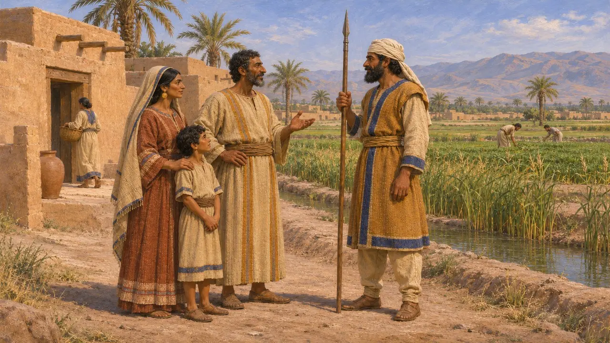
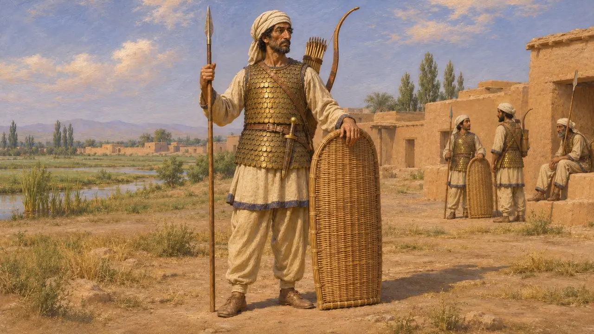
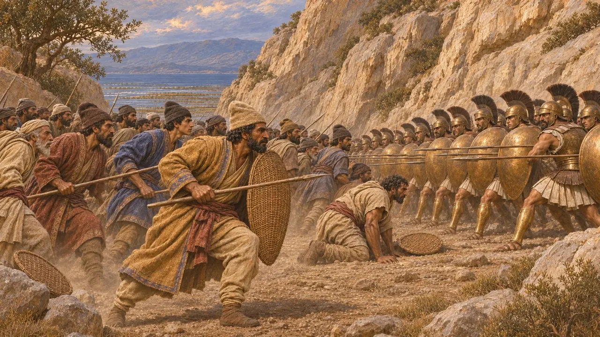
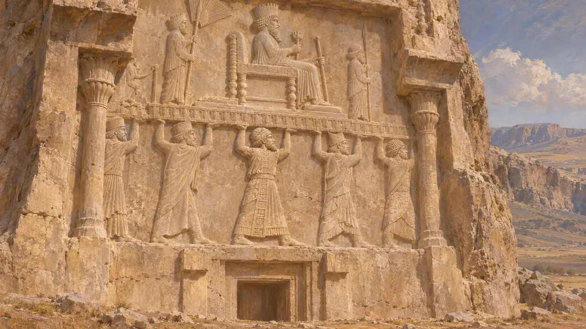
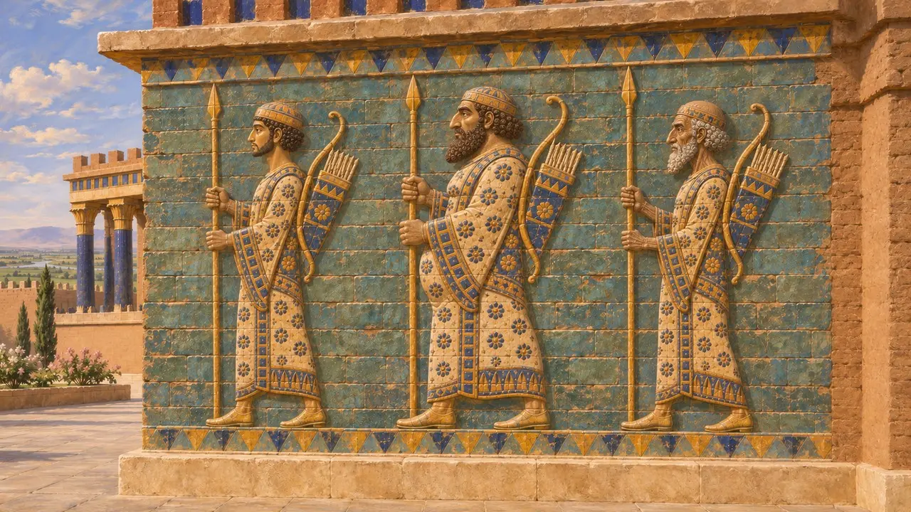

在希腊作家笔下，基西亚人是苏萨周边地区的居民，波斯铭文称这片土地为埃兰。希罗多德说，公元前480年他们随薛西斯出征，除头饰外装备与波斯人相同。他还说，他们是温泉关之战中最先被派去进攻希腊人的部队之一。他们的故土位于帝国腹地，毗邻国王的主要驻跸之所之一。
游戏中： 游戏将基西亚人表现为更廉价、征集更快的长矛兵，装备轻于波斯人。希罗多德称，除了头巾之外，他们的武装与波斯人相同，弓也在其中，因此这是游戏的简化。

基西亚人是谁
争夺中“基西亚”一名源自希腊语。希罗多德称苏萨周围的土地为基西亚，并将其列为一个纳税区；埃斯库罗斯也写到基西亚妇女为薛西斯的战败而哀哭。波斯铭文从未使用这个名字，只提到埃兰。多数史家认为基西亚人指苏萨平原的居民，大体即埃兰人，但这一称呼究竟涵盖全体埃兰人还是仅指低地居民，至今仍有争论。
Herodotus 5.49, 3.91; Aeschylus, Persians; Strabo, Geography 15.3.2

希罗多德笔下的兵器与服饰
古代记述希罗多德在薛西斯军队的名录中说，基西亚人的装备与波斯人相同，只是戴的是米特拉（一种布制缠头），而非波斯人的毡帽。他说，波斯步兵身披鳞甲，手持柳条盾，携带短矛、配芦苇箭的大弓以及短剑。他们的统帅是奥塔涅斯之子阿纳斐斯。因此，基西亚步兵很可能既是长矛兵，也同样是弓箭手。
Herodotus 7.61-62

率先攻入温泉关隘道
古代记述希罗多德记载，公元前480年，薛西斯因希腊人守住山口而震怒，先派米底人和基西亚人上阵，命他们活捉敌人。他们苦战终日，伤亡惨重，却始终未能冲破希腊人的阵线，国王随后才派叙达尔涅斯率不死军出战。希罗多德借此说明国王虽人多，真正的战士却寥寥无几。这是一种受战果左右的希腊式评判。
Herodotus 7.210-211

波斯记载中的埃兰
见于史载在贝希斯敦铭文中，大流士将埃兰列为其领土之一，并记载埃兰曾三次起兵反叛，先后由阿辛那、马尔提亚以及后来的阿塔迈塔领导。纳克歇-洛斯塔姆的大流士陵墓上，标有族名的抬座者中有一名埃兰人。波斯波利斯城防泥板大多以埃兰语写成，可见埃兰的书吏传统对波斯行政影响之深。
DB §6, §16, §22, §71; DNe; Persepolis Fortification tablets

苏萨砖饰上的弓箭手
争夺中大流士苏萨宫殿的琉璃砖饰板上，是一排排身着长袍的卫士，手持长矛，肩挎弓与箭囊。他们常被与国王的卫队联系起来，但并无任何标注。所绘究竟是波斯人、苏萨的埃兰人，还是理想化的王家卫队，至今仍有争议，因此不能将其视为基西亚士兵的写照。
P. Briant, From Cyrus to Alexander, 2002; D. T. Potts, The Archaeology of Elam, 1999
来源
- Herodotus 7.61-62, 7.210-211, 3.91, 5.49
- Darius, Behistun inscription (DB)
- P. Briant, From Cyrus to Alexander, 2002
- D. T. Potts, The Archaeology of Elam, 1999
- W. Henkelman, The Other Gods Who Are, 2008
- Aeschylus, Persians